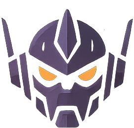
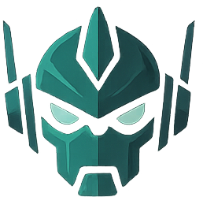
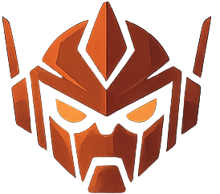

Zubrenn
Explore the continent. Build your cities. Battle for resources.
Choose File › New Game… to generate a world.
Open Zubrenn › Settings… to configure your AI assistant.
Explore the continent. Build your cities. Battle for resources.
Choose File › New Game… to generate a world.
Open Zubrenn › Settings… to configure your AI assistant.
| Terrain | Cells | % of map |
|---|
| Terrain Bonus | Count |
|---|



| Colonies | 0 |
| Total population | 0 |
| Treasury | 0 |
| Energy (stored / max) | 0 / 0 |
| Food (stored / max) | 0 / 0 |
| Material (stored / max) | 0 / 0 |
| Goods (stored / max) | 0 / 0 |
| Water (stored / max) | 0 / 0 |
| Wealth (stored / max) | 0 / 0 |
| End of turn | Credits |
|---|---|
| Taxes collected | 0 |
| Road maintenance (0 seg) | 0 |
| Monorail maintenance (0 seg) | 0 |
| Canal maintenance (0 sides) | 0 |
| Bridge maintenance (0 seg) | 0 |
| Drone Base support (0 bases) | 0 |
| Total maintenance | 0 |
| Net to treasury | 0 |
| Projected treasury | 0 |
| Name | Type | Strength | Location |
|---|
| Species | Opinion | Status |
|---|
| Partner | Direction | Resource | Payment/yr | Years left |
|---|